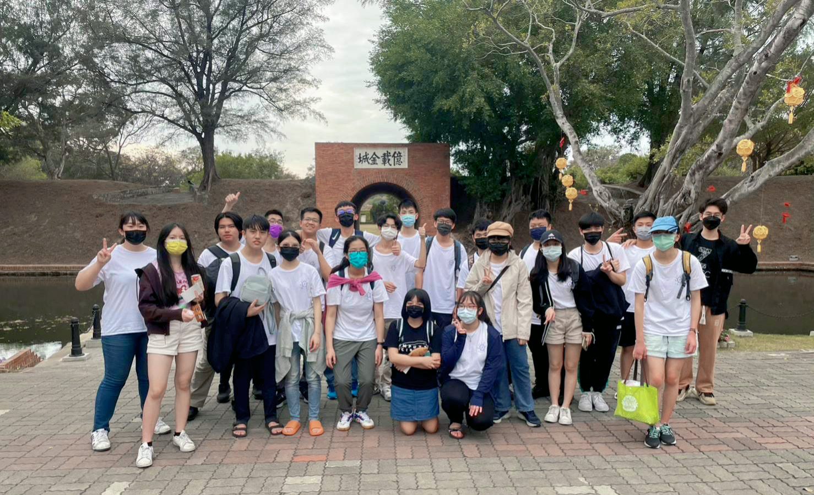

關於我們

位在台北的中崙高中資訊研習社，有一群充滿熱血與夢想的年輕人，近年來與高雄師範大學合作，定下一個目標：每年不論多忙碌，都要空出時間來舉辦一場回饋社會的公益程式教育營，讓更多孩子有機會學習程式設計，並且了解到科技能夠為社會帶來的正面影響。
位在台北的中崙高中資訊研習社，有一群充滿熱血與夢想的年輕人，近年來與高雄師範大學合作，定下一個目標：每年不論多忙碌，都要空出時間來舉辦一場回饋社會的公益程式教育營，讓更多孩子有機會學習程式設計，並且了解到科技能夠為社會帶來的正面影響。
這次營隊很榮幸能邀請余遠澤教授指導營隊進行及課程設計，余教授有超過十五年的教學經驗，在科技領域更是有豐富經驗和知識的專家，非常受學生們的喜愛和敬重，在余教授的監督下，此營隊將會提升至全新的高度
自幼生長於弱勢家庭，讓我深深體會到資源不對稱的可怕。希望我們用心設計的營隊。能教導社團成員感恩與回饋社會，也啟發小朋友對資訊的熱誠，在這個不確定的時代，給孩子們最需要的競爭力
自小有幸可以接觸程式碼，我發覺撰寫程式是一個很有趣的事情。我想讓大家都能夠接觸程式碼，能夠啟發大家對程式的熱誠。